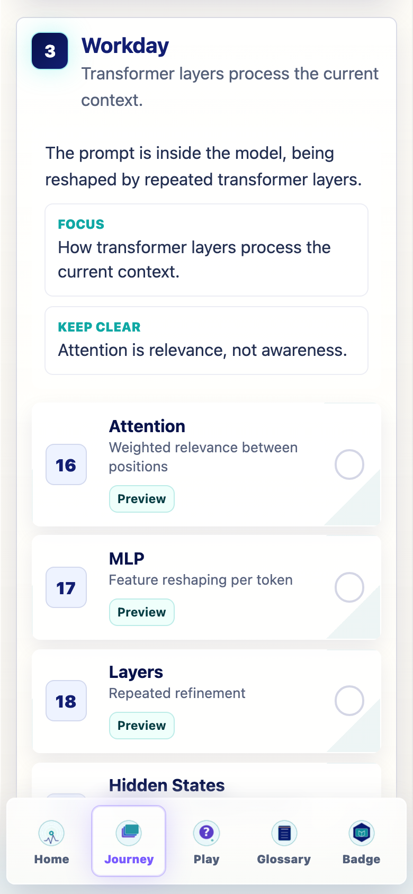
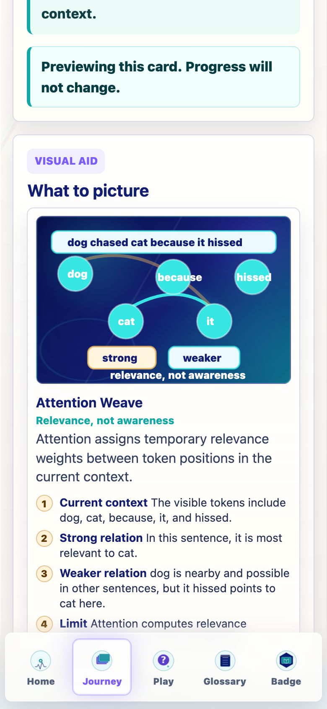
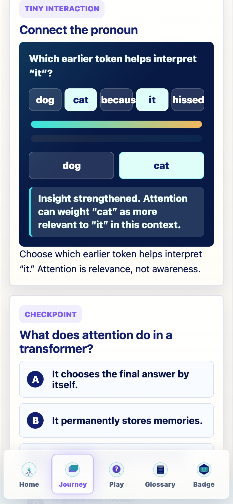
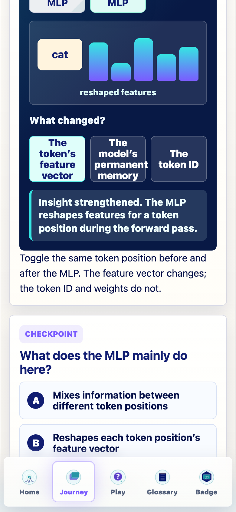
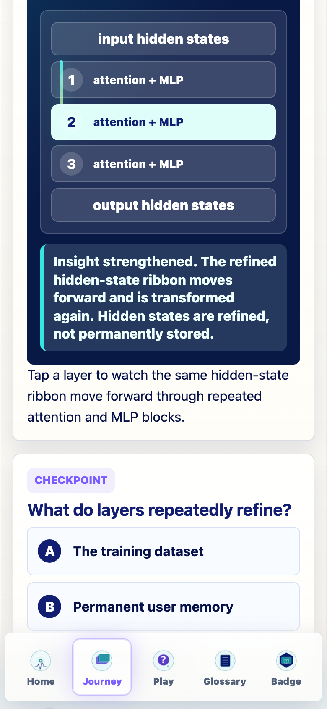
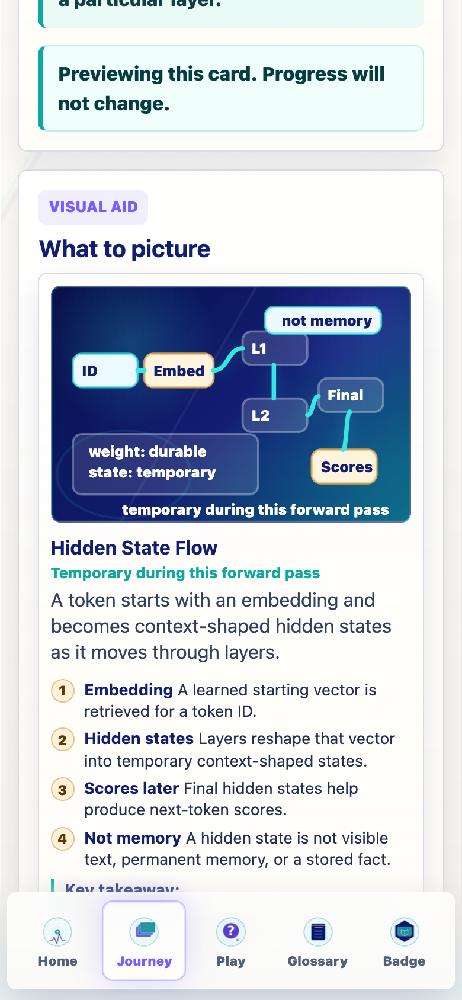
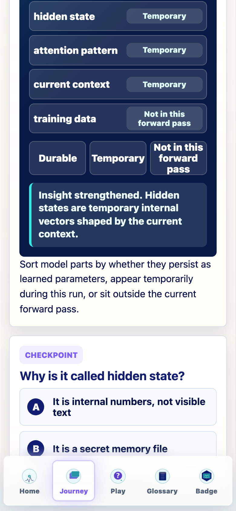
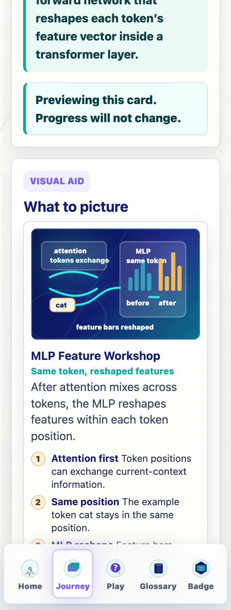
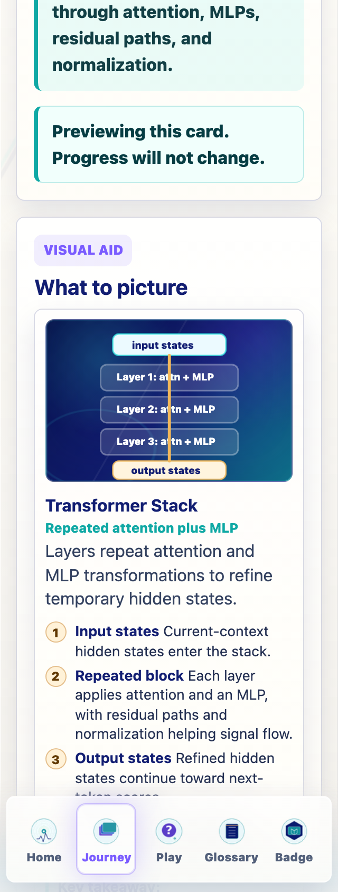
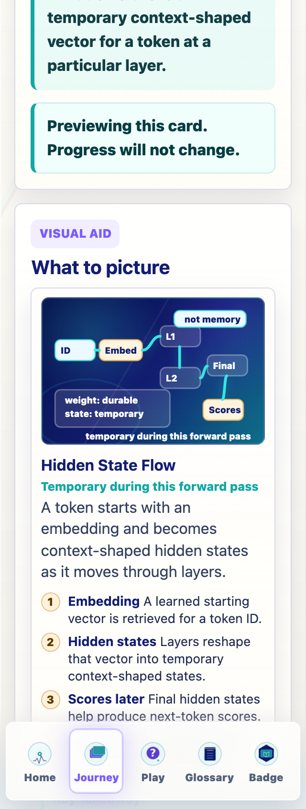

Prompt Life
v0.20.1 Workday Visual + Interaction Repair
This pass upgrades the Attention, MLP, Layers, and Hidden States Journey cards with richer lesson fields, clearer coded visuals, dedicated tiny interactions, and glossary support. It keeps Journey order, progress, checkpoint randomization, the one-badge model, games, dependencies, and generated assets unchanged.
What Changed
Attention
Concrete token relevance replaces abstract token nodes. The interaction asks which earlier token helps interpret "it."
MLP
Feature bars show the same token position before and after per-token MLP reshaping.
Layers
A repeated attention-plus-MLP stack shows refinement without implying human thought steps.
Hidden States
A state-flow diagram and sort interaction distinguish durable weights from temporary activations.
Files Changed
src/data/content.tssrc/data/exercises.tssrc/components/VisualAids.tsxsrc/main.tsxsrc/styles/global.cssdocs/REVIEW_NOTES.mddocs/stage-audits/v0-20-workday/*implementation docs, screenshots, and this report
Glossary Updates
Added or improved Attention, Relevance weight, MLP, Multi-layer perceptron, Feed-forward network, Layer, Transformer layer, Residual path, Normalization, Hidden state, and Temporary activation.
Screenshots










Verification
npm run typecheck: passednpm run build: passed with the existing Vite large-chunk warningnpm run build:pages: passed with the existing Vite large-chunk warningnpm run audit:answers: passed- Browser QA: passed for captured 390px and 320px Workday states; no horizontal overflow was detected.
Known Issues
- Long cards still require scrolling, and the bottom nav can appear at the bottom of tall screenshots. Required controls remain reachable.
- The worktree also contains pre-existing uncommitted v0.19.3 Glossary Dojo feedback files that were not part of this pass.
- Workday is not yet a strong Image 2 target. Coded diagrams remain the right teaching surface here.